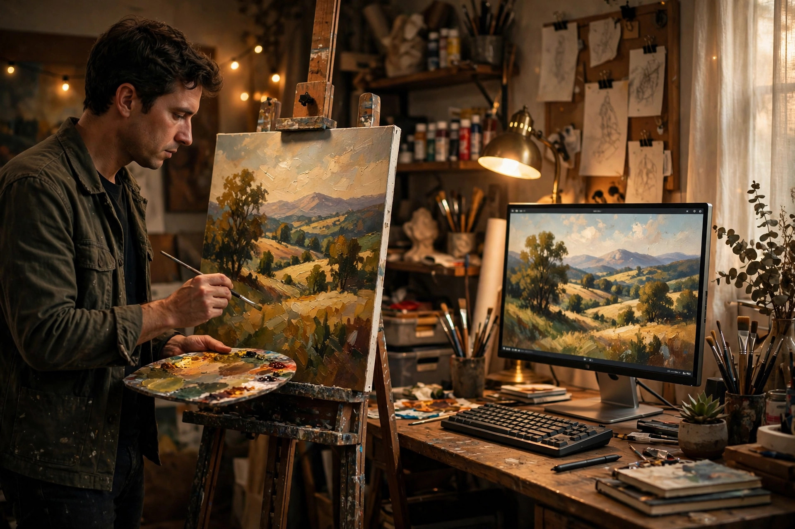
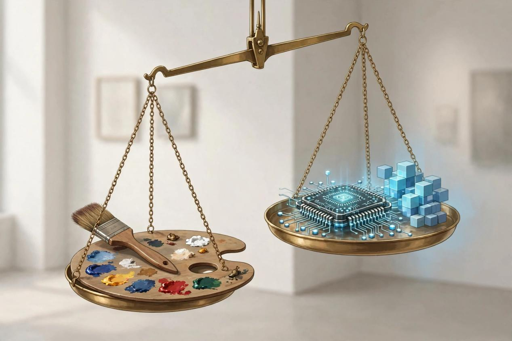
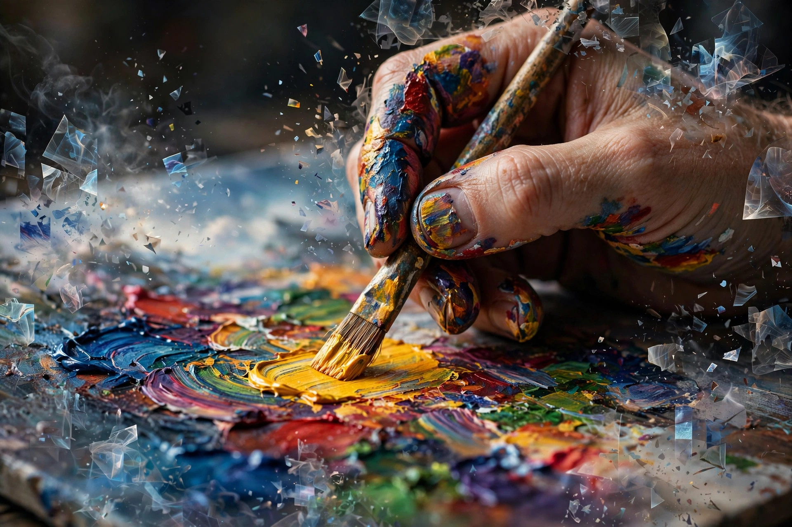

关于“艺术家用不用AI”，现在流传着三个互相打架的数字：86%、51.7%、85%。第一个说几乎所有人都在用，第三个说绝大多数人根本不用。它们不可能都对——但真相是，它们都对。只是它们说的不是同一群人。

一、三个数字，三个世界
86%，来自 Adobe 2025年对16000多名数字内容创作者的调查，覆盖美、英、法、德、韩、日、印、澳八国。86%的人说自己在主动使用生成式AI。但注意这个样本的画像：主要是 Z 世代和千禧一代的新兴创作者，他们的工作本来就活在软件里——剪视频、做播客、运营账号。对他们来说，AI 不是“要不要背叛艺术”的问题，是“顺手好不好用”的问题。
51.7%，来自美国 SNAAP 项目2025年对2000多名艺术设计专业校友的调查。一半多的人说在专业场景里用过生成式AI。但他们的用法很说明问题：主要是提效、头脑风暴、修改润色，而不是替代创作。AI 在这里是个“得力助手”，不是“执笔的人”。
85%从不用，来自2026年 CHI 会议上发表的一项研究：378位经过验证的职业视觉艺术家——插画师、平面设计师、影像师、纹身师——85%说工作中从不用生成式AI，88%从不用图像生成AI。更有意思的是，45%的人每天都会在工作中碰到AI生成的图像，25%每周都会碰到。他们活在 AI 的包围里，却选择不用。
三个数字打架，不是因为有人撒谎，而是因为“艺术家”这个词里装了太多不同的人。争论“艺术家用不用AI”，就像争论“中国人爱不爱吃辣”——不先定义是谁，数字毫无意义。
二、“用AI”到底在说什么？
第二个被混淆的概念，是“用”字。
Adobe 的数据里藏着一个关键细节：创作者用 AI 最多的三件事，是55%的编辑、放大与增强，52%生成新素材，48%头脑风暴。排第一的不是“生成”，是“修”。
用 AI 去掉照片里多余的路人、把老照片放大修复、让 AI 帮你想五个构图方案——和用 AI 一句话生成整张“作品”，是两种完全不同的事。前者是工具，后者是代笔。但很多调查问卷只问一句“你用生成式AI吗”，把抠图的和代笔的装进同一个数字里。
这就是为什么数字会打架：我们连“用”都没定义清楚，就开始争论“用不用”。一个画家用 AI 放大作品照片准备印刷，和一个“艺术家”用 AI 生成整张画拿去参展，在统计表上都是“用了AI”。这种统计，除了制造焦虑，什么都说明不了。
三、职业艺术家为什么选择不用？
CHI 研究里还有一句值得细品：大多数受访者对生成式AI持强烈反对态度，担心它影响自己的职业和工作条件。
这不是“学不会新工具”的保守。2024年一项对459位艺术家的调查显示，他们最集中的担忧是四个词：透明度、所有权、公平性——我的作品是不是在未经同意的情况下被拿去训练了？AI 生成的东西要不要披露？谁拥有 AI 辅助作品的版权？AI 公司该不该给艺术家补偿？
工具免费，不等于代价为零。对职业艺术家来说，用 AI 的代价可能是：自己的风格被模型学会，变成任何人都能调用的“滤镜”；自己的作品成为训练数据，却分不到一分钱。他们抵制的不是技术，是这套技术背后的分配方式。这和当年摄影师抵制数码相机完全不同——数码相机没有拿走任何人的底片去训练自己。
所以“85%不用”这个数字，读法应该是：在看清代价之后，大多数职业艺术家做出了一个清醒的选择。不是无知，是拒绝。

四、用得多，不等于被替代了
这里要区分两个经常被偷换的概念：adoption（采用）和 replacement（替代）。
Adobe 的86%说明 AI 已经深度进入数字创作流程；SNAAP 的51.7%说明 AI 进入了艺术从业者的职业生活；但 CHI 的85%从不用说明，在职业视觉艺术家的世界里，“不用”依然是主流。三者合在一起，真正的图景是：AI 在创意世界不是“用或不用”的二选一，而是“在哪用、用到什么程度”的光谱。
数字创作者用 AI 修图，不代表画家会用 AI 作画；艺术家用 AI 头脑风暴，不代表他们会把署名权交给模型。每一类人都在光谱上找到了自己的位置。
而最有意思的恰恰是那45%：每天都被 AI 图像包围，却选择不用的艺术家。他们不是没见过 AI 有多方便，他们是见过之后，依然选择拿起画笔。这个“不用”，本身就是一种立场——它定义了什么是“人做的东西”的价值。当 AI 图像泛滥到免费时，“人手做的”反而成了稀缺品。2026年艺术圈兴起的“超个体主义”思潮说的正是这个：问题不再是“你用 AI 了吗”，而是“人类到底做了什么”。
五、对画家真正有用的问题
回到最实际的问题：一个画油画、水彩的传统画家，该怎么看 AI？
目前没有任何可靠调查能给出“多少画家用 AI”的数字——所有研究都把画家和其他视觉艺术家混在一起。但比数字更重要的，是找准 AI 在工作流里的位置：
规划，而不是代笔。 用 AI 推演几种构图、试试不同的光影和色彩关系，在动笔之前把方案想清楚。AI 在这里是素描本，不是画家。
学习，而不是抄答案。 让 AI 分析你的构图问题、提供另一种处理思路——但要记住，AI 的“建议”来自它见过的所有画，它不知道你想表达什么。判断力永远是画家自己的。
善后，而不是创作。 作品完成后，用 AI 辅助修图、放大，准备印刷和社交媒体发布。这是 Adobe 数据里55%的人都在做的事，也是争议最小的用法。
一句话：让 AI 做它擅长的事（穷举、试错、修补），把“决定画什么、为什么这样画”留给自己。作品之所以是你的作品，不是因为每一笔都是手画的，而是因为每一个关键决定都是你做的。
结尾
三个数字还会继续打架，新的调查还会给出新的百分比。但比数字更值得记住的，是数字背后的三个人群：把 AI 当顺手工具的数字创作者、把 AI 当提效助手的艺术从业者、看清代价后选择不用的职业艺术家。
AI 没有统一创意世界，它只是把创意世界照得更清楚了——照出了“用”和“用”的巨大差别，照出了工具和代笔的边界，照出了“人做的东西”为什么值钱。
下次再看到“86%的艺术家都在用AI”这种标题，先问一句：你说的艺术家，是哪些人？你说的用，是哪种用？
